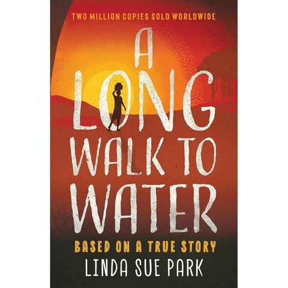

Summary
A Long Walk to Water is a moving story that made me think about the struggles of others in worse environments. The narrative between Salva's terrifying journey as a refugee and Nya's daily walk for water makes me feel grateful for basic resources like clean tap water that many take for granted. What I think is cool is the dual-narrative that moves along the timeline at different rates. The resolution at the end, where their paths cross and Salva brings water to Nya's village, is compelling because it shows how when you struggle with something as a child, you want to help others with the same problem.
What I Learned
A lot of people don’t have access to clean water, which is not healthy. When people don’t have many resources they make do by inventing their own ways to get what they need. For example, to cool a house without using an AC machine, people knit their own curtains.
My Rating
⭐⭐⭐⭐⭐
Favorite Quote
I can also add a section about what I learned from this book.
← Back to My Library